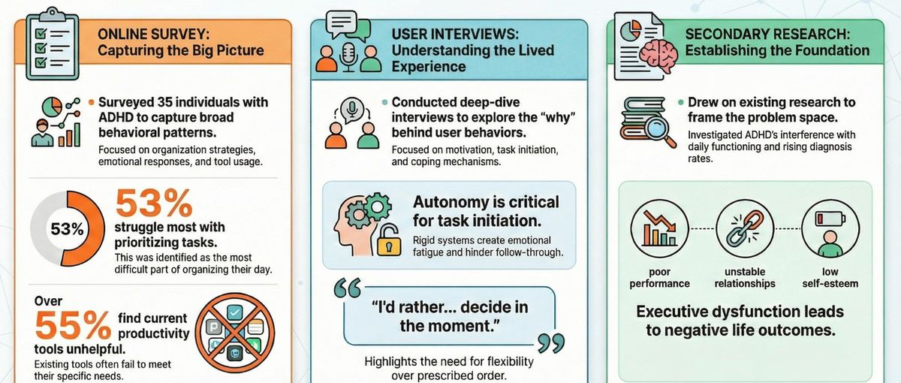
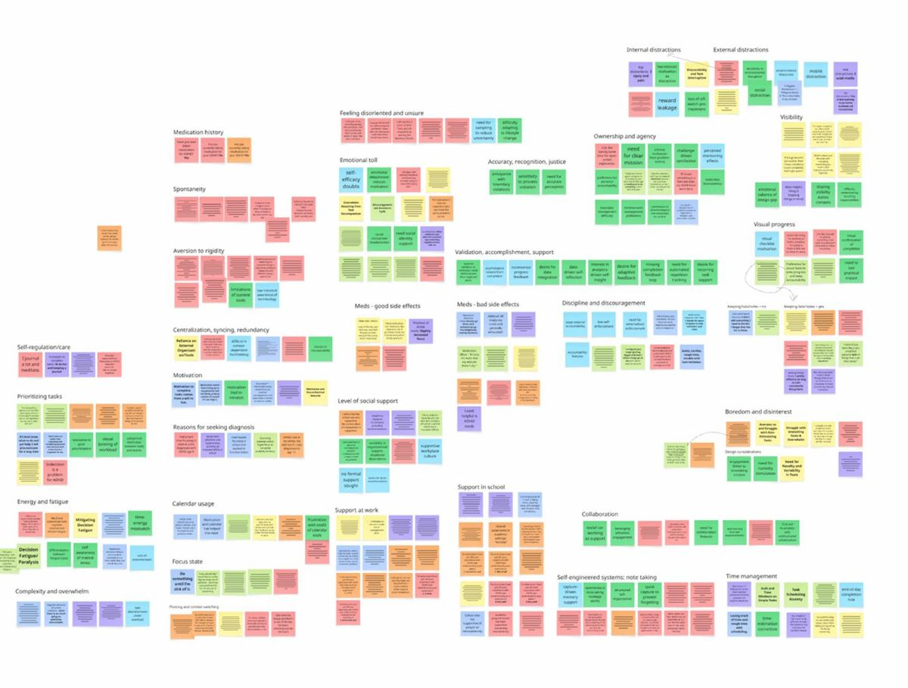
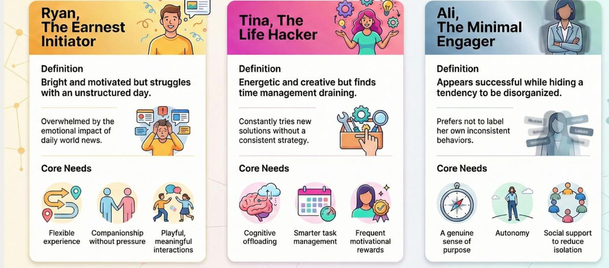
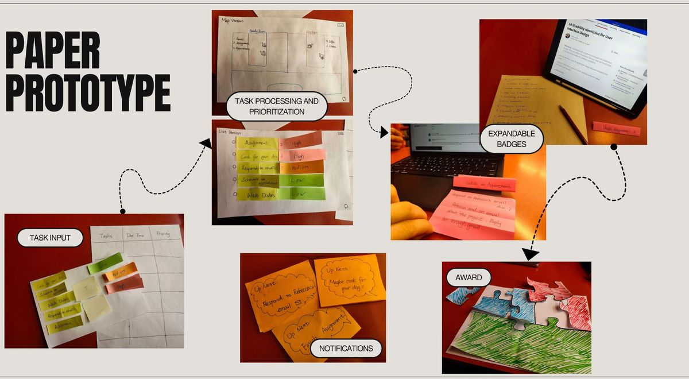

Getting started shouldn't be the hardest part
Aura Focus is a task manager for adults with ADHD. We took it through all five research stages in a five-day research sprint, from a survey to paper-prototype tests.
The problem
Most productivity tools assume rigid schedules, steady focus and manual sorting, which are the executive functions people with ADHD find hardest to sustain.
What we did
A survey of 35 adults with ADHD, interviews, and secondary research, synthesized in an affinity map and three personas, then paper-prototype and utility tests.
What changed
Six design changes, each traced to a participant. The biggest: suggestions people can override, with the reason shown.
Stage 1 · Planning
How might we help adults with ADHD manage daily tasks and feel more capable and connected?
With five days for research, I planned each method to answer a different kind of question: the survey for patterns, interviews for motivations, secondary research to frame the problem.
Stage 2 · User research
Existing tools didn't fit how people with ADHD work

One participant wished the tool could tell them in advance how long each task takes, because time blindness makes them underestimate everything.P2, paraphrased
Stage 3 · Synthesis
An affinity map, down to four insights

Autonomy starts tasks
People wanted to decide in the moment. "I'd rather... decide in the moment."
Rigidity drains
Strict structure created emotional fatigue and stalled follow-through.
Time is invisible
Time blindness made people underestimate every task.
Tools miss specific needs
Over half found current tools unhelpful because they assume one way of working.
Stage 4 · UX modeling
Three kinds of task managers

We used the personas to align the team on who we were designing for. They were not treated as validation: design decisions still came from what participants said in testing.
Stage 5 · Evaluation
Paper prototypes first, then a utility test

The utility test covered five questions: gamification and social motivation, energy and cognitive load, autonomy and manual control, positive feedback loops, and how much guidance to give.
| What we heard (paraphrased) | What we changed | Who |
|---|---|---|
| Wants to know how long tasks take | Estimate duration and energy level from past tasks | P2 |
| Gets sidetracked by tasks in other rooms | Spatial anchors show only the current room's tasks | P5 |
| Wants to see the logic and adjust it | Manual override slot, with the reason for each suggestion | P4 |
| Likes categories already set up | Voice input that auto-tags time, place and energy | P2 |
| Don't highlight failure at day's end | Unfinished tasks roll over neutrally as "pending" | UT |
| Prefers social rewards to the puzzle | Small, opt-in friends leaderboard | UT |
Reflection
A full cycle on a tight clock
Worked
- Mixed methods gave breadth and depth in five days.
- The iteration table kept design honest to evidence.
- Override control came straight from participants.
Limits
- A short sprint and a small interview sample.
- Personas are synthesized, not validated.
- Paper prototypes can't test the AR experience itself.
Next time
- Diary study to see real task-starting moments.
- Test an interactive prototype over several days.
- Measure task initiation, not just preference.